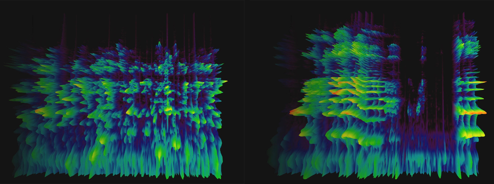

Major Studio
Ongoing
The primary introduction to the creation of work within a design and technology context. It is the interface for MFA Design and Technology core topics-- Narrative, Computation, and Interactivity. The course is run in a studio format, which means all students are expected to participate in the making, discussion, and critique of work.

Major Studio